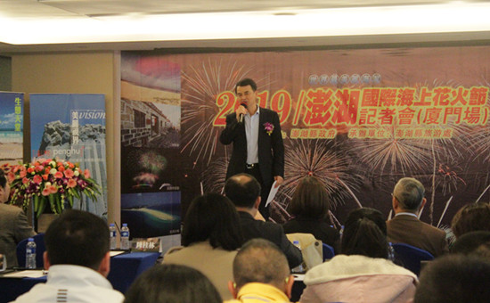

当前位置：
最新资讯
>> 澎湖海上花火节来厦门推介
澎湖海上花火节来厦门推介

3月15日上午，一首耳熟能详的“外婆的澎湖湾”在厦门响起，拉开2019年澎湖海上花火节厦门推介会的序幕，厦门市旅游发展委员会陈桂林副主任、厦门市台办陈德津副巡视员、澎湖县旅游处陈美龄处长、厦澎两地旅游和航空业者及厦门主要媒体记者共50多人参加了推介会。
据悉，澎湖的花火节将进入第17个年头，每年都吸引众多海内外游客前往澎湖旅游。今年花火节将于4月18日至6月27日期间每周一、周四晚上在澎湖马公观音亭举办， 5月12日母亲节还将增加一个场次，总计22场次。今年花火节开幕式将以澎湖主题故事的烟火秀搭配无人机编队演出，活动现场将搭设大型科技水幕及创意灯区，展现花火节欢乐游园区形象，并邀请到大陆知名烟花团队前往澎湖施放烟花，一展澎湖花火多元美丽的形象。同时澎湖县旅游处还专门配合花火节推出“旅游摄影比赛”，期望借由游客的镜头精准捕捉澎湖的人文和自然之美。
陈桂林副主任推介会致辞中指出，澎湖岛屿众多，拥有独特的地理位置和自然环境，一首《外婆的澎湖湾》风靡多年，让澎湖在大陆闻名遐迩，旅游产品让大陆游客趋之若鹜。海上花火节作为澎湖最盛大的节庆活动，已成为澎湖的旅游特色和知名品牌，今年首次纳入“厦金澎旅游节”主题活动项目，厦澎两地将共同推广。期盼在两地旅游业者的共同努力下，越来越多的大陆游客能“走进大厦之门，畅游澎湖湾”。
陈美龄处长表示，澎湖一年四季都有丰富的观光资源：柔美的黄金沙滩、壮阔的海岛地形、刚强的玄武岩柱。他们将针对不同季节策划主题旅游，包含跳岛游、生态游、爱情游等，期待未来能与厦门深入交流合作，携手促进两岸观光交流，做大厦门澎湖旅游市场。（文图/林雅红）